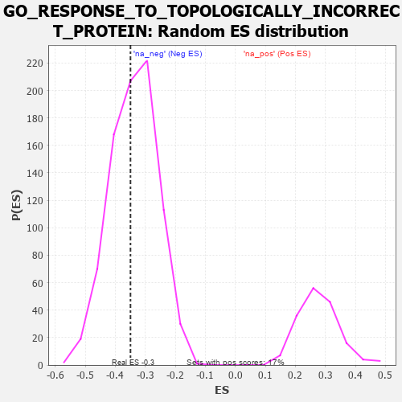

| | | Dataset | 7d |
| Phenotype | NoPhenotypeAvailable |
| Upregulated in class | na_neg |
| GeneSet | GO_RESPONSE_TO_TOPOLOGICALLY_INCORRECT_PROTEIN |
| Enrichment Score (ES) | -0.3496508 |
| Normalized Enrichment Score (NES) | -1.0360402 |
| Nominal p-value | 0.42908654 |
| FDR q-value | 0.82046187 |
| FWER p-Value | 1.0 |
Table: GSEA Results Summary
 Fig 1: Enrichment plot: GO_RESPONSE_TO_TOPOLOGICALLY_INCORRECT_PROTEIN
Fig 1: Enrichment plot: GO_RESPONSE_TO_TOPOLOGICALLY_INCORRECT_PROTEIN
Profile of the Running ES Score & Positions of GeneSet Members on the Rank Ordered List
| PROBE | GENE SYMBOL | GENE_TITLE | RANK IN GENE LIST | RANK METRIC SCORE | RUNNING ES | CORE ENRICHMENT | | 1 | JKAMP | | | 310 | 0.804 | -0.0038 | No |
| 2 | GSK3A | | | 351 | 0.745 | 0.0238 | No |
| 3 | BAX | | | 387 | 0.711 | 0.0507 | No |
| 4 | FAF2 | | | 680 | 0.566 | 0.0386 | No |
| 5 | AMFR | | | 856 | 0.518 | 0.0393 | No |
| 6 | NCK2 | | | 1131 | 0.458 | 0.0248 | No |
| 7 | DERL2 | | | 1632 | 0.368 | -0.0222 | No |
| 8 | HYOU1 | | | 1692 | 0.358 | -0.0139 | No |
| 9 | CUL3 | | | 1893 | 0.321 | -0.0250 | No |
| 10 | GOSR2 | | | 2050 | 0.298 | -0.0316 | No |
| 11 | BAG3 | | | 2620 | 0.209 | -0.0943 | No |
| 12 | CLPB | | | 2706 | 0.198 | -0.0963 | No |
| 13 | ERO1A | | | 2925 | 0.162 | -0.1167 | No |
| 14 | TLN1 | | | 3030 | 0.145 | -0.1235 | No |
| 15 | UFL1 | | | 3041 | 0.144 | -0.1184 | No |
| 16 | EDEM2 | | | 3145 | 0.131 | -0.1257 | No |
| 17 | ERN2 | | | 3160 | 0.129 | -0.1218 | No |
| 18 | SERP2 | | | 3286 | 0.108 | -0.1329 | No |
| 19 | PDIA6 | | | 3512 | 0.075 | -0.1580 | No |
| 20 | DERL1 | | | 3570 | 0.065 | -0.1623 | No |
| 21 | STT3B | | | 3676 | 0.047 | -0.1735 | No |
| 22 | HSF1 | | | 3718 | 0.039 | -0.1770 | No |
| 23 | DAXX | | | 3722 | 0.038 | -0.1757 | No |
| 24 | SRPRA | | | 3788 | 0.029 | -0.1826 | No |
| 25 | TOR1A | | | 4030 | -0.013 | -0.2125 | No |
| 26 | FICD | | | 4087 | -0.022 | -0.2186 | No |
| 27 | TBL2 | | | 4175 | -0.038 | -0.2279 | No |
| 28 | AUP1 | | | 4315 | -0.062 | -0.2428 | No |
| 29 | MYDGF | | | 4429 | -0.081 | -0.2535 | No |
| 30 | SYVN1 | | | 4454 | -0.085 | -0.2528 | No |
| 31 | ERP44 | | | 4482 | -0.091 | -0.2522 | No |
| 32 | CXXC1 | | | 4557 | -0.107 | -0.2568 | No |
| 33 | BAG6 | | | 4563 | -0.108 | -0.2527 | No |
| 34 | EDEM3 | | | 4746 | -0.148 | -0.2692 | No |
| 35 | SRPRB | | | 4769 | -0.151 | -0.2653 | No |
| 36 | CLU | | | 4889 | -0.174 | -0.2727 | No |
| 37 | EP300 | | | 4941 | -0.186 | -0.2709 | No |
| 38 | DDX11 | | | 5102 | -0.225 | -0.2812 | No |
| 39 | HDAC6 | | | 5183 | -0.244 | -0.2806 | No |
| 40 | SSR1 | | | 5391 | -0.294 | -0.2939 | No |
| 41 | EDEM1 | | | 5541 | -0.331 | -0.2981 | No |
| 42 | DCTN1 | | | 5950 | -0.454 | -0.3297 | Yes |
| 43 | XBP1 | | | 6011 | -0.475 | -0.3164 | Yes |
| 44 | CALR | | | 6077 | -0.499 | -0.3027 | Yes |
| 45 | UBXN4 | | | 6122 | -0.511 | -0.2858 | Yes |
| 46 | HSPB8 | | | 6408 | -0.621 | -0.2945 | Yes |
| 47 | PDIA5 | | | 6639 | -0.734 | -0.2913 | Yes |
| 48 | PACRG | | | 7007 | -0.940 | -0.2964 | Yes |
| 49 | UFD1 | | | 7157 | -1.040 | -0.2695 | Yes |
| 50 | MFN2 | | | 7208 | -1.081 | -0.2283 | Yes |
| 51 | VAPB | | | 7482 | -1.378 | -0.2022 | Yes |
| 52 | ASNS | | | 7595 | -1.547 | -0.1483 | Yes |
| 53 | BOK | | | 7715 | -1.817 | -0.0835 | Yes |
| 54 | CHAC1 | | | 7882 | -2.633 | 0.0112 | Yes |
Table: GSEA details [plain text format]

Fig 2: GO_RESPONSE_TO_TOPOLOGICALLY_INCORRECT_PROTEIN: Random ES distribution
Gene set null distribution of ES for GO_RESPONSE_TO_TOPOLOGICALLY_INCORRECT_PROTEIN